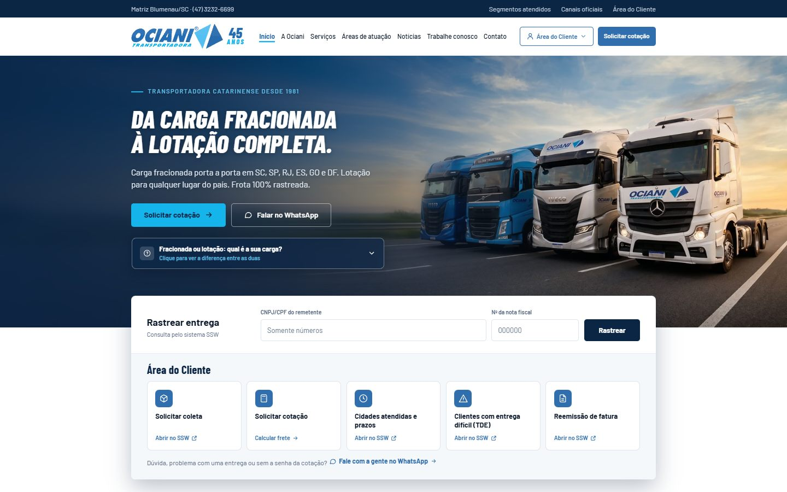
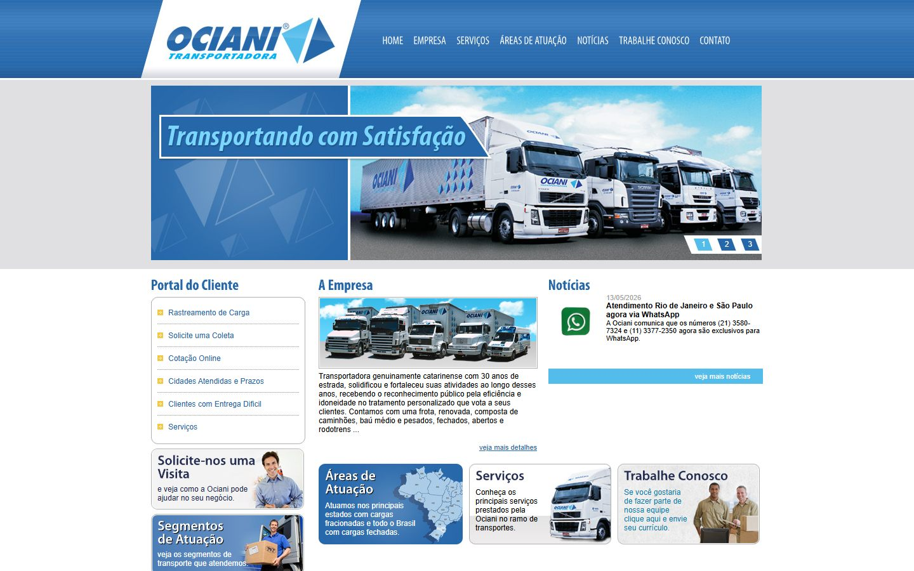

arraste_para_comparar_com_o_site_antigo/
no ar · desde 02/10/2026projeto profissional · feito do zero
Site da Ociani Transportadora
Novo site institucional da empresa onde trabalho, integrado ao SSW, o sistema de logística que a transportadora já usa (webservices SOAP).
- CotaçãoSSW
- ColetaSSW
- RastreamentoSSW
- Área do Cliente
- Mapa de cobertura
- Notícias (Sanity)
144 commitsastro · typescript · cloudflare · sanity